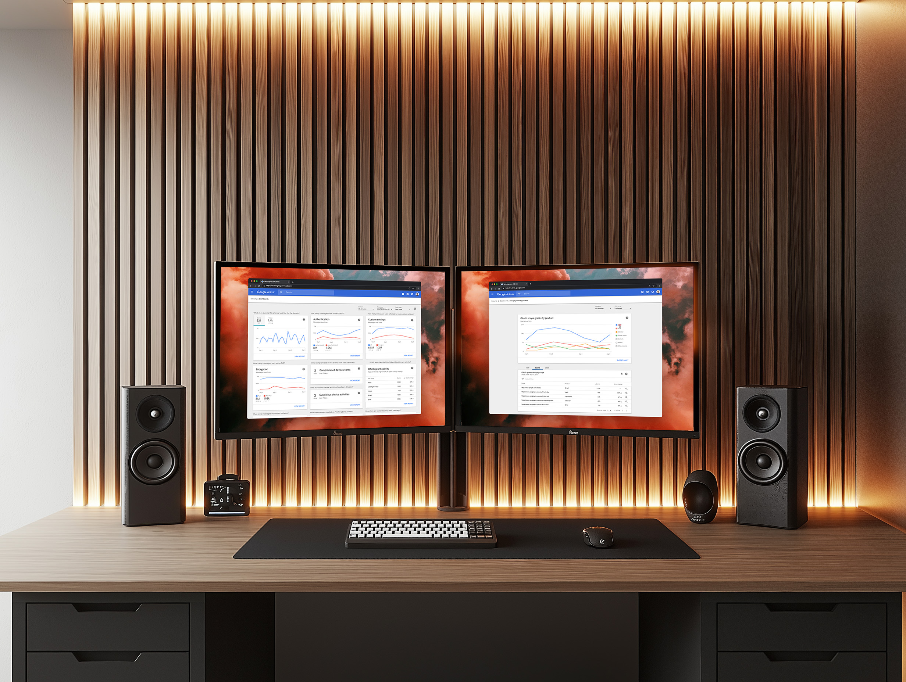
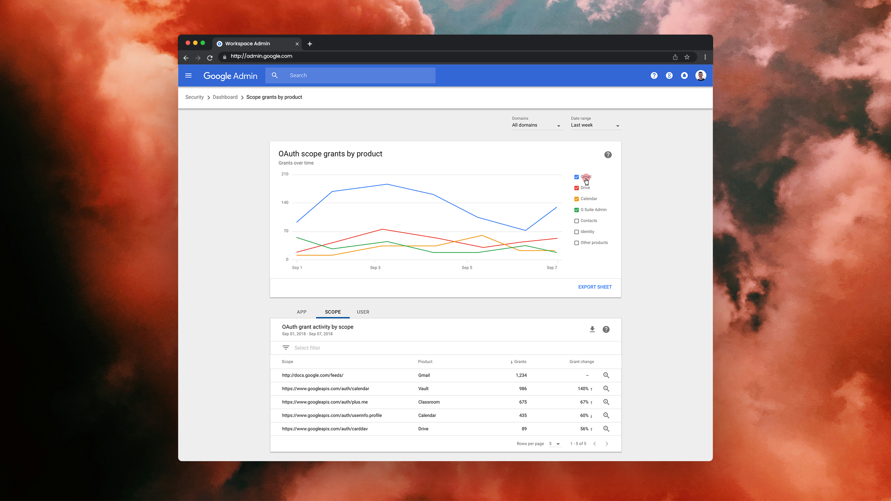
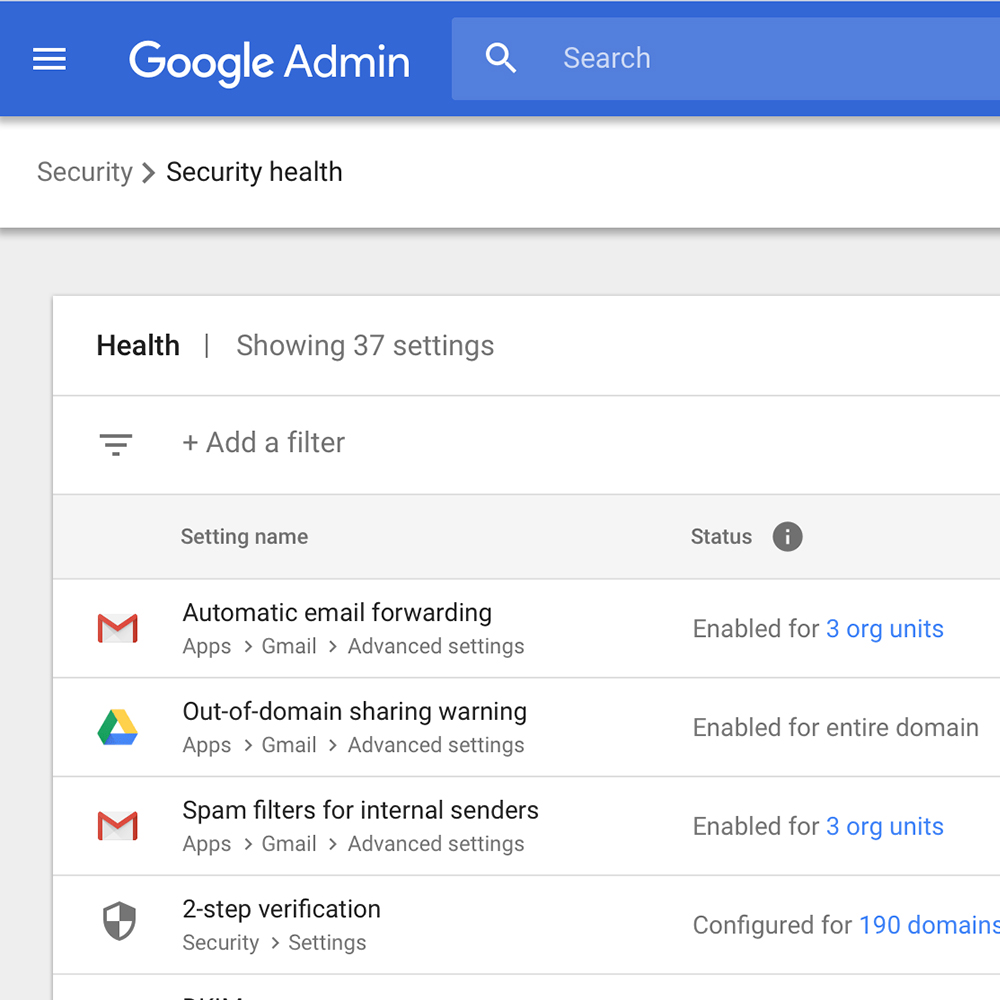
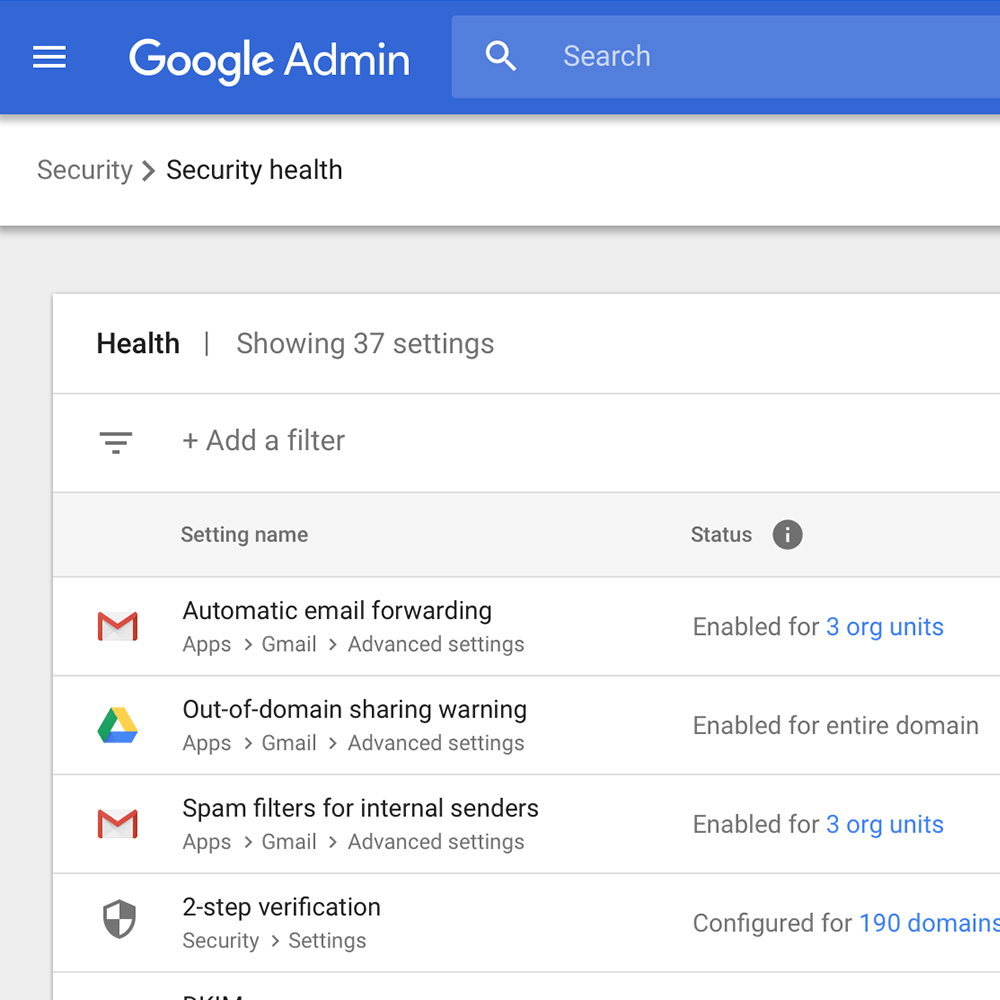
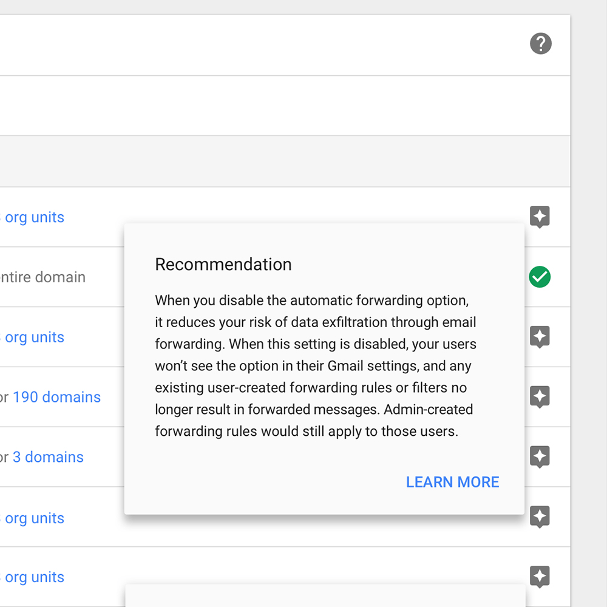

A security startup within Google Workspace.

The Challenge
The initial idea for this product was to externalize a couple of APIs that allowed us to see and act on Gmail data. We thought it would be valuable for organizations to have access to this data in order to understand information and trends that might affect their organization's security.
This seems like a simple idea, but for me and my team it was a huge learning experience. We didn't know anything about the people that would actually use such a product and we knew very little about data visualization. We had to work quickly to learn about both while trying to launch the MVP.
Little did we know that externalizing a couple of APIs would turn into a suite of security products for Workspace that would populate a brand new Enterprise SKU, expanding Workspace's business considerably.

Project Impact
Tons of value
Security Center was a key value driver for an entirely new premium subscription tier for Google Workspace (Enterprise SKU) with several large company contracts citing it — especially the investigation tool — as the reason for signing.
Scalable UI
The initial UIs were designed in a very general way so that more data sources and objects could be added using the same UI framework. The junction table I introduced for the drive sharing relationship audit experience scaled to show relationships for all kinds of data.
Made for exponential growth
The dashboards and investigation tool became exponentially more valuable as new security products were added to the Workspace portfolio — enabling alert rules, investigation queries, and custom dashboard tracking all from one place.
Security Dashboards
I learned more about data visualization working on this project than ever before. It started with visualizing some canned queries as an MVP and grew into a flexible dashboard framework where the dashboard could be customized based on the queries that were most important to each user.
The dashboard consisted of a main page that housed chart widgets. From each widget you could click into a details page to analyze the data further using a set of filters, and click on a point in time to drill down into individual line items.



Security Health
The security health page allowed admins to see a comprehensive view of their organization's security posture across all of their settings. Each setting showed its current status and provided a recommendation for the best security practice.

The Investigation Tool
The investigation tool was one of the most powerful and impactful pieces of Security Center. It allowed admins and legal teams to run queries to investigate security incidents and compliance issues. The tool allowed for complex multi-condition queries and the ability to take action on results directly from the tool.


OAuth & Data Security
We also designed experiences around OAuth grant management, allowing admins to see which third-party apps had access to their organization's data and revoke access when needed. This was a critical piece of the security posture for enterprise customers.